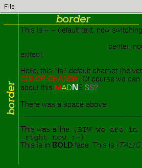

wxHtmlWindow is probably the only class you will directly use unless you want to do something special (like adding new tag handlers or MIME filters).
The purpose of this class is to display HTML pages (either local file or downloaded via HTTP protocol) in a window. The width of the window is constant - given in the constructor - and virtual height is changed dynamically depending on page size. Once the window is created you can set its content by calling SetPage(text), LoadPage(filename) or LoadFile.
Note
wxHtmlWindow uses the wxImage class for displaying images. Don't forget to initialize all image formats you need before loading any page! (See wxInitAllImageHandlers and wxImage::AddHandler.)
継承元
インクルードファイル
<wx/html/htmlwin.h>
Window styles
| wxHW_SCROLLBAR_NEVER | Never display scrollbars, not even when the page is larger than the window. |
| wxHW_SCROLLBAR_AUTO | Display scrollbars only if page's size exceeds window's size. |
| wxHW_NO_SELECTION | Don't allow the user to select text. |
Event handling
To process input from a wxHtmlWindow, use these event handler macros to direct input to member functions that take a wxHtmlCellEvent argument or a wxHtmlLinkEvent.
| EVT_HTML_CELL_CLICKED(id, func) | A wxHtmlCell was clicked. |
| EVT_HTML_CELL_HOVER(id, func) | The mouse passed over a wxHtmlCell. |
| EVT_HTML_LINK_CLICKED(id, func) | A wxHtmlCell which contains an hyperlink was clicked. |
参照
wxHtmlLinkEvent, wxHtmlCellEvent
wxHtmlWindow::wxHtmlWindow
wxHtmlWindow::AddFilter
wxHtmlWindow::AppendToPage
wxHtmlWindow::GetInternalRepresentation
wxHtmlWindow::GetOpenedAnchor
wxHtmlWindow::GetOpenedPage
wxHtmlWindow::GetOpenedPageTitle
wxHtmlWindow::GetRelatedFrame
wxHtmlWindow::HistoryBack
wxHtmlWindow::HistoryCanBack
wxHtmlWindow::HistoryCanForward
wxHtmlWindow::HistoryClear
wxHtmlWindow::HistoryForward
wxHtmlWindow::LoadFile
wxHtmlWindow::LoadPage
wxHtmlWindow::OnCellClicked
wxHtmlWindow::OnCellMouseHover
wxHtmlWindow::OnLinkClicked
wxHtmlWindow::OnOpeningURL
wxHtmlWindow::OnSetTitle
wxHtmlWindow::ReadCustomization
wxHtmlWindow::SelectAll
wxHtmlWindow::SelectionToText
wxHtmlWindow::SelectLine
wxHtmlWindow::SelectWord
wxHtmlWindow::SetBorders
wxHtmlWindow::SetFonts
wxHtmlWindow::SetPage
wxHtmlWindow::SetRelatedFrame
wxHtmlWindow::SetRelatedStatusBar
wxHtmlWindow::ToText
wxHtmlWindow::WriteCustomization
wxHtmlWindow()
Default constructor.
wxHtmlWindow(wxWindow *parent, wxWindowID id = -1, const wxPoint& pos = wxDefaultPosition, const wxSize& size = wxDefaultSize, long style = wxHW_DEFAULT_STYLE, const wxString& name = "htmlWindow")
Constructor. The parameters are the same as for the wxScrolledWindow constructor.
Parameters
style
static void AddFilter(wxHtmlFilter *filter)
Adds input filter to the static list of available filters. These filters are present by default:
bool AppendToPage(const wxString& source)
Appends HTML fragment to currently displayed text and refreshes the window.
Parameters
source
Return value
false if an error occurred, true otherwise.
wxHtmlContainerCell* GetInternalRepresentation() const
Returns pointer to the top-level container.
See also: Cells Overview, Printing Overview
wxString GetOpenedAnchor()
Returns anchor within currently opened page (see GetOpenedPage). If no page is opened or if the displayed page wasn't produced by call to LoadPage, empty string is returned.
wxString GetOpenedPage()
Returns full location of the opened page. If no page is opened or if the displayed page wasn't produced by call to LoadPage, empty string is returned.
wxString GetOpenedPageTitle()
Returns title of the opened page or wxEmptyString if current page does not contain <TITLE> tag.
wxFrame* GetRelatedFrame() const
Returns the related frame.
bool HistoryBack()
Moves back to the previous page. (each page displayed using LoadPage is stored in history list.)
bool HistoryCanBack()
Returns true if it is possible to go back in the history (i.e. HistoryBack() won't fail).
bool HistoryCanForward()
Returns true if it is possible to go forward in the history (i.e. HistoryBack() won't fail).
void HistoryClear()
Clears history.
bool HistoryForward()
Moves to next page in history.
virtual bool LoadFile(const wxFileName& filename)
Loads HTML page from file and displays it.
Return value
false if an error occurred, true otherwise
参照
virtual bool LoadPage(const wxString& location)
Unlike SetPage this function first loads HTML page from location and then displays it. See example:
htmlwin->LoadPage("help/myproject/index.htm");
Parameterslocation
Return value
false if an error occurred, true otherwise
参照
virtual bool OnCellClicked(wxHtmlCell *cell, wxCoord x, wxCoord y, const wxMouseEvent& event)
This method is called when a mouse button is clicked inside wxHtmlWindow.
The default behaviour is to emit a wxHtmlCellEvent and, if the event was not processed or skipped, call OnLinkClicked if the cell contains an hypertext link.
Overloading this method is deprecated; intercept the event instead.
Parameters
cell
x, y
event
Return value
true if a link was clicked, false otherwise.
virtual void OnCellMouseHover(wxHtmlCell *cell, wxCoord x, wxCoord y)
This method is called when a mouse moves over an HTML cell. Default behaviour is to emit a wxHtmlCellEvent. Overloading this method is deprecated; intercept the event instead.
Parameters
cell
x, y
virtual void OnLinkClicked(const wxHtmlLinkInfo& link)
Called when user clicks on hypertext link. Default behaviour is to emit a wxHtmlLinkEvent and, if the event was not processed or skipped, call LoadPage and do nothing else. Overloading this method is deprecated; intercept the event instead.
Also see wxHtmlLinkInfo.
virtual wxHtmlOpeningStatus OnOpeningURL(wxHtmlURLType type,const wxString& url, wxString *redirect)
Called when an URL is being opened (either when the user clicks on a link or an image is loaded). The URL will be opened only if OnOpeningURL returns wxHTML_OPEN. This method is called by wxHtmlParser::OpenURL. You can override OnOpeningURL to selectively block some URLs (e.g. for security reasons) or to redirect them elsewhere. Default behaviour is to always return wxHTML_OPEN.
Parameters
type
| wxHTML_URL_PAGE | Opening a HTML page. |
| wxHTML_URL_IMAGE | Opening an image. |
| wxHTML_URL_OTHER | Opening a resource that doesn't fall into any other category. |
url
redirect
Return value
| wxHTML_OPEN | Open the URL. |
| wxHTML_BLOCK | Deny access to the URL, wxHtmlParser::OpenURL will return NULL. |
| wxHTML_REDIRECT | Don't open url, redirect to another URL. OnOpeningURL must fill *redirect with the new URL. OnOpeningURL will be called again on returned URL. |
virtual void OnSetTitle(const wxString& title)
Called on parsing <TITLE> tag.
virtual void ReadCustomization(wxConfigBase *cfg, wxString path = wxEmptyString)
This reads custom settings from wxConfig. It uses the path 'path' if given, otherwise it saves info into currently selected path. The values are stored in sub-path wxHtmlWindow
Read values: all things set by SetFonts, SetBorders.
Parameters
cfg
path
void SelectAll()
Selects all text in the window.
参照
wxString SelectionToText()
Returns current selection as plain text. Returns empty string if no text is currently selected.
void SelectLine(const wxPoint& pos)
Selects the line of text that pos points at. Note that pos is relative to the top of displayed page, not to window's origin, use CalcUnscrolledPosition to convert physical coordinate.
参照
void SelectWord(const wxPoint& pos)
Selects the word at position pos. Note that pos is relative to the top of displayed page, not to window's origin, use CalcUnscrolledPosition to convert physical coordinate.
参照
void SetBorders(int b)
This function sets the space between border of window and HTML contents. See image:

Parameters
b
void SetFonts(const wxString& normal_face, const wxString& fixed_face, const int *sizes = NULL)
This function sets font sizes and faces.
Parameters
normal_face
fixed_face
sizes
Defaults
Default font sizes are defined by constants wxHTML_FONT_SIZE_1, wxHTML_FONT_SIZE_2, ..., wxHTML_FONT_SIZE_7. Note that they differ among platforms. Default face names are empty strings.
bool SetPage(const wxString& source)
Sets HTML page and display it. This won't load the page!! It will display the source. See example:
htmlwin -> SetPage("<html><body>Hello, world!</body></html>");
If you want to load a document from some location use
LoadPage instead.Parameters
source
Return value
false if an error occurred, true otherwise.
void SetRelatedFrame(wxFrame* frame, const wxString& format)
Sets the frame in which page title will be displayed. format is format of frame title, e.g. "HtmlHelp : %s". It must contain exactly one %s. This %s is substituted with HTML page title.
void SetRelatedStatusBar(int bar)
After calling SetRelatedFrame, this sets statusbar slot where messages will be displayed. (Default is -1 = no messages.)
Parameters
bar
wxString ToText()
Returns content of currently displayed page as plain text.
virtual void WriteCustomization(wxConfigBase *cfg, wxString path = wxEmptyString)
Saves custom settings into wxConfig. It uses the path 'path' if given, otherwise it saves info into currently selected path. Regardless of whether the path is given or not, the function creates sub-path wxHtmlWindow.
Saved values: all things set by SetFonts, SetBorders.
Parameters
cfg
path